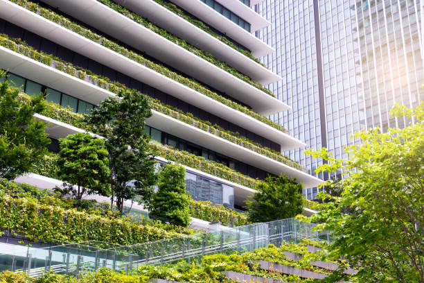

We appreciate both great design and quality craftsmanship. Specialising in timber framed homes, we love working with our clients to create unique and custom projects. The versatility that timber offers in terms of flexibility and speed of construction are why we love utilising this building technique.
It is always important to consider passive design and what construction materials can be used to improve this further. We always look to utiilise the latest products for our clients that are both cost effective and efficient.
Company has long considered Jobsite Safety to be the most important consideration of construction activity. Keating has developed a comprehensive Safety Program that has yielded excellent results in worksite safety.
Company is vigilant in its efforts to use energy-sustaining building techniques, with attention to the area’s natural resources and the community environment. Keating keeps constant watch on its construction waste-management practices, the indoor air quality on jobsites, consistently applying the highest sustainability practices in the industry in order to minimize detrimental impacts to the environment and promote healthier indoor working and living spaces. Our Project Teams are trained in sustainable construction, many with LEED certifications and specialty accreditations.